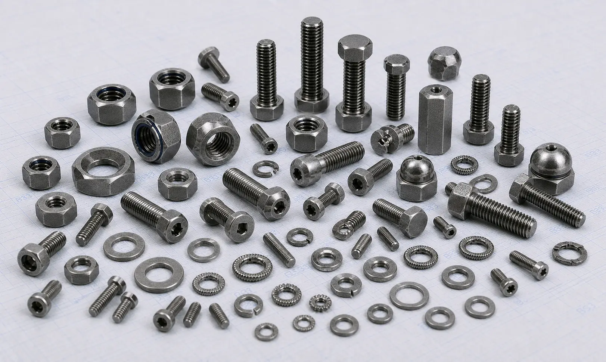

Hastelloy C276 Fasteners manufacturer in India supplying bolts, nuts, stud bolts, washers, and anchor bolts for chemical processing, offshore, marine, pollution control, oil and gas, and industrial applications.
Hastelloy C276 Fasteners are premium nickel-molybdenum-chromium alloy fasteners designed for use in highly corrosive and demanding industrial environments. Known for their exceptional resistance to a wide range of aggressive chemicals, acids, chlorides, and oxidizing media, these fasteners are widely used in chemical processing, marine, oil & gas, pollution control, and power generation industries. As a trusted Hastelloy C276 Fasteners Manufacturer in India, we supply high-quality fastening solutions engineered to deliver long-term performance and reliability in critical applications.
Our product range includes Hastelloy C276 bolts, nuts, stud bolts, anchor bolts, washers, hex bolts, hex nuts, U bolts, and socket head bolts manufactured to international standards and project-specific requirements.

Hastelloy C276 (UNS N10276) is one of the most versatile corrosion-resistant nickel alloys available today. The alloy combines nickel, molybdenum, chromium, and tungsten to provide outstanding resistance to pitting, crevice corrosion, stress corrosion cracking, and chemical attack across a broad range of operating environments.
As an important grade within the Nickel Alloy Fasteners range, Hastelloy C276 Fasteners are commonly specified for applications where exposure to harsh chemicals, seawater, acidic media, and elevated temperatures can affect the performance of conventional fastening materials.
| Property | Details |
|---|---|
| Product | Hastelloy C276 Fasteners |
| Grade | Hastelloy C276 / UNS N10276 |
| Standards | ASTM F467, ASTM F468 |
| Product Types | Bolts, Nuts, Stud Bolts, Anchor Bolts, Washers |
| Sizes | M3 to M100 and Custom Sizes |
| Thread Type | Metric, UNC, UNF, BSW |
| Forms | Hex Bolts, Hex Nuts, Stud Bolts, U Bolts, Socket Head Bolts, Washers |
| Certification | Mill Test Certificates Available |
Hastelloy C276 bolts are designed for demanding industrial applications requiring superior corrosion resistance and dependable mechanical performance. They are widely used in chemical processing equipment, offshore systems, and industrial plants.
Our Hastelloy C276 nuts provide secure fastening performance in aggressive service environments. These fasteners are commonly used in reactors, pumps, pressure vessels, and process equipment exposed to corrosive chemicals.
Hastelloy C276 stud bolts are extensively used in flanged piping systems, heat exchangers, and pressure-containing equipment where resistance to corrosion and long-term reliability are essential.
We supply Hastelloy C276 washers and anchor bolts for industrial installations, structural applications, and equipment foundations requiring high corrosion resistance and durability.
Hastelloy C276 offers exceptional resistance to oxidizing and reducing chemicals, making it suitable for some of the most aggressive industrial environments.
The alloy provides excellent protection against pitting, crevice corrosion, and stress corrosion cracking, especially in chloride-containing environments.
Hastelloy C276 Fasteners perform reliably in contact with acids, chlorides, solvents, and numerous industrial process chemicals, making them suitable for diverse applications.
The alloy maintains its corrosion resistance and mechanical properties over a wide temperature range, supporting demanding industrial service conditions.
Its superior resistance to chemical attack helps extend equipment life, reduce maintenance costs, and minimize unplanned downtime.
| Element | Percentage (%) |
|---|---|
| Nickel | Balance |
| Chromium | 14.5 – 16.5 |
| Molybdenum | 15.0 – 17.0 |
| Iron | 4.0 – 7.0 |
| Tungsten | 3.0 – 4.5 |
| Cobalt | Max 2.5 |
| Manganese | Max 1.0 |
| Carbon | Max 0.01 |
| Property | Value |
|---|---|
| Tensile Strength | 690 MPa Min |
| Yield Strength | 283 MPa Min |
| Elongation | 40% Min |
| Density | 8.89 g/cm³ |
| Melting Range | 1325 – 1370°C |
Hastelloy C276 Fasteners are extensively used in reactors, storage tanks, pressure vessels, piping systems, and heat exchangers handling highly corrosive chemicals and process fluids.
These fasteners are widely used in offshore platforms, subsea systems, refineries, and processing facilities where corrosion resistance and reliability are critical.
The alloy performs exceptionally well in flue gas desulfurization units, scrubbers, waste treatment facilities, and environmental control equipment exposed to aggressive media.
Hastelloy C276 provides excellent resistance to seawater, chlorides, and harsh marine environments, making it suitable for offshore and coastal installations.
Power plants and industrial facilities utilize Hastelloy C276 Fasteners in critical systems requiring long-term performance under demanding operating conditions.
| Industry Requirement | Benefit of Hastelloy C276 |
|---|---|
| Severe Chemical Exposure | Excellent resistance to aggressive chemicals |
| Corrosion Protection | Outstanding resistance to pitting and crevice corrosion |
| Equipment Reliability | Long-term performance in critical applications |
| Reduced Maintenance | Lower replacement frequency and downtime |
| Process Safety | Reliable material integrity in harsh environments |
Hastelloy C276 Fasteners are widely used where equipment operates in highly corrosive process conditions involving acids, chlorides, and aggressive chemical media. Their ability to withstand both oxidizing and reducing environments helps improve system reliability and operational efficiency.
| Property | Hastelloy C276 | Hastelloy C22 |
|---|---|---|
| Corrosion Resistance | Excellent | Excellent |
| Oxidizing Media Resistance | Very Good | Excellent |
| Reducing Media Resistance | Excellent | Excellent |
| Pitting & Crevice Corrosion Resistance | Excellent | Excellent |
| Chemical Processing Applications | Widely Used | Widely Used |
| Marine Applications | Excellent | Excellent |
Both grades are trusted for highly corrosive service environments and critical industrial applications. Hastelloy C276 Fasteners are often selected for broad-spectrum chemical resistance across a wide range of aggressive media, while Hastelloy C22 Fasteners are frequently preferred where enhanced resistance to oxidizing chemicals and localized corrosion is a key requirement.
As a trusted supplier of Hastelloy C276 Fasteners, we provide bolts, nuts, stud bolts, anchor bolts, and washers in a wide range of sizes and specifications. Our fastening solutions support EPC contractors, OEM manufacturers, engineering companies, and industrial buyers operating in highly corrosive service environments.
We focus on consistent product quality, technical support, and timely delivery to meet the requirements of critical industrial projects worldwide.
Quality remains an integral part of our manufacturing and supply process. All Hastelloy C276 Fasteners undergo inspection for dimensional accuracy, thread quality, material integrity, and compliance with applicable standards before dispatch.
As an ISO Certified Company, we are committed to delivering fastening solutions that meet industry requirements while maintaining consistency, reliability, and long-term performance in demanding chemical processing, offshore, and industrial applications.
Choosing the right fastener material is important for ensuring long-term performance in corrosive and demanding service conditions. Factors such as chemical exposure, temperature, and operating environment can influence material selection. Our team can help you select suitable Hastelloy C276 bolts, nuts, stud bolts, anchor bolts, and washers based on your project requirements and application needs.